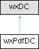

|
wxPdfDocument
1.4.0
Library for generating PDF documents from wxWidgets applications
|
|
wxPdfDocument
1.4.0
Library for generating PDF documents from wxWidgets applications
|
Class representing a PDF drawing context. More...
#include <pdfdc.h>

Public Member Functions | |
| wxPdfDC () | |
| Default constructor. | |
| wxPdfDC (const wxPrintData &printData) | |
| Constructor initializing the DC with print data. | |
| wxPdfDC (wxPdfDocument *pdfDocument, double templateWidth, double templateHeight) | |
| Constructor for creating a template in an existing PDF document. | |
| wxPdfDocument * | GetPdfDocument () |
| Returns the associated PDF document. | |
| void | SetResolution (int ppi) |
| Sets the resolution for the DC. | |
| int | GetResolution () const |
| Returns the current resolution. | |
| void | SetImageType (wxBitmapType bitmapType, int quality=75) |
| Sets the image type and quality for bitmap output. | |
| void | SetMapModeStyle (wxPdfMapModeStyle style) |
| Sets the map mode style. | |
| wxPdfMapModeStyle | GetMapModeStyle () const |
| Returns the current map mode style. | |
Class representing a PDF drawing context.
| wxPdfDC::wxPdfDC | ( | ) |
Default constructor.
| wxPdfDC::wxPdfDC | ( | const wxPrintData & | printData | ) |
Constructor initializing the DC with print data.
| printData | Printer configuration data |
| wxPdfDC::wxPdfDC | ( | wxPdfDocument * | pdfDocument, |
| double | templateWidth, | ||
| double | templateHeight ) |
Constructor for creating a template in an existing PDF document.
| pdfDocument | Associated PDF document |
| templateWidth | Width of the template in user units |
| templateHeight | Height of the template in user units |
| wxPdfMapModeStyle wxPdfDC::GetMapModeStyle | ( | ) | const |
| wxPdfDocument * wxPdfDC::GetPdfDocument | ( | ) |
Returns the associated PDF document.
| int wxPdfDC::GetResolution | ( | ) | const |
| void wxPdfDC::SetImageType | ( | wxBitmapType | bitmapType, |
| int | quality = 75 ) |
Sets the image type and quality for bitmap output.
| bitmapType | The type of the bitmap (e.g., wxBITMAP_TYPE_JPEG) |
| quality | Compression quality from 0 to 100 |
| void wxPdfDC::SetMapModeStyle | ( | wxPdfMapModeStyle | style | ) |
Sets the map mode style.
Map mode style determines how logical coordinates and font sizes are scaled to the PDF page, allowing emulation of platform-specific behaviors or native PDF API scaling.
| style | The map mode style to apply |
| void wxPdfDC::SetResolution | ( | int | ppi | ) |